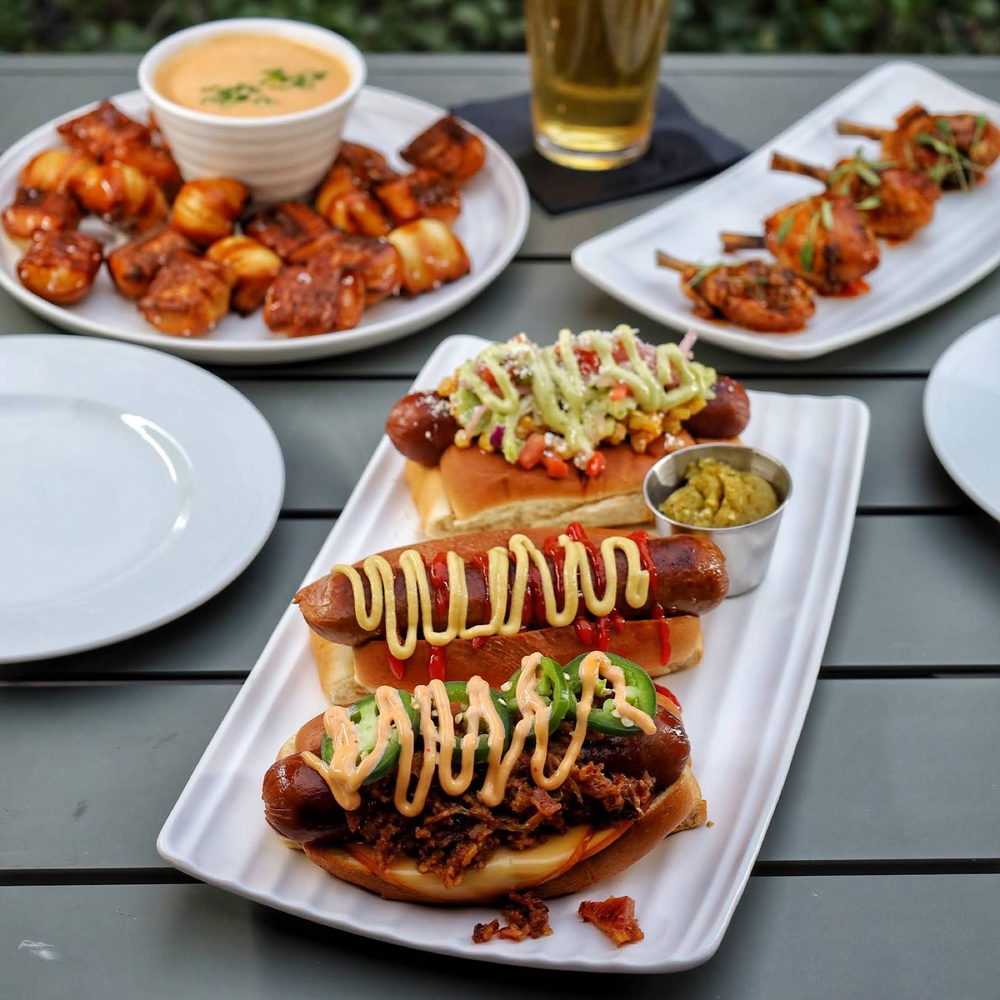

Wings and shareables
Wings for the table and quesadillas to share, with a cold drink.
Bar and restaurant · San Antonio
Index of the menu
Handcrafted cocktails, wings for the table and open windows onto the courtyard.

What to order
Plates and drinks worth ordering.
Wings for the table and quesadillas to share, with a cold drink.

Limon Shrimp pasta, Cajun shrimp pasta and blackened salmon.

A BBQ Bacon Jam burger and big omelettes, with potatoes and coffee.
4.4 / 5 · 50 Google reviews
1A True San Antonio Hidden Gem! ⭐⭐⭐⭐⭐ Paseo Bar, tucked away inside the beautiful Estancia del Norte hotel, completely shatters any negative stereotypes about hotel dining. I have ordered five completely different things across their menu, and every single item was absolutely outstanding, Chefs Angel and Blair are doing an incredible job in the kitchen!
2The staffs were very friendly. The bartender he was super kind to us. Love the atmosphere, very relaxing. I ordered the blackened salmon, surprisingly it was not dry! Fully cook but soft. The pork chop was ok, little spicy to me. The corn is creamy and buttery.
3For a hotel bar/ restaurant this is one of my favorites I have been to on work trips! Service is always great and food on point. Happy hour deals are great and plenty to choose from on the food menu.
About
Tucked inside the hotel on the 410 Loop. An open, airy room with arched windows over the courtyard, pendant lights and a navy bar.
Friendly staff, a relaxed atmosphere and live music now and then.
South Texas cocktails, regionally sourced drinks, al fresco dining and an all-day happy hour on Sundays.

Visit
37 NE Interstate 410 Loop, San Antonio, TX 78216
Inside the Estancia del Norte hotel. Open daily, 11 AM to 11 PM.